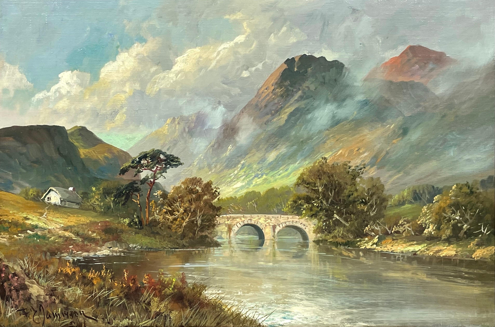

|  |  |
 |
 |
|
| Product1 | Product2 | Product3 | Product4 | Product5 |
| $250 | $720 | $450 | $2500 | $820 |
| Details | Details | Details | Details | Details |
Contact
Delivery and Accessability
At Hogans Old Pictures, customer convenience is a top priority. The company offers flexible delivery options, ensuring that recreated paintings and restored artworks reach clients safely and in pristine condition. For local customers, Hogans Old Pictures provides direct, in-person delivery to homes or businesses, guaranteeing a personal touch and secure transport. For clients outside the local area, the company partners with reliable shipping services to handle both national and international deliveries. Every artwork is carefully packaged with protective materials to prevent damage during transit, ensuring that each piece arrives in perfect condition. In terms of accessibility, Hogans Old Pictures is committed to making its services available to a broad audience. The company offers consultations via phone, email, and in-person visits, allowing customers to discuss their needs and customize their orders without hassle. They also maintain an easy-to-navigate website where clients can explore their portfolio, view service options, and make inquiries. Additionally, Hogans Old Pictures is open to accommodating special requests, such as adjusting the size of paintings or offering payment plans, making their work more accessible to diverse budgets and tastes. Hogans Old Pictures strives to make art accessible and enjoyable for everyone, ensuring that both delivery and communication are smooth, reliable, and customer-friendly.